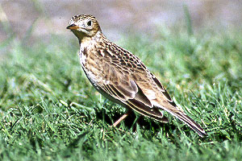

These photographs accompany records that have been recently submitted to the committee. This record has been ACCEPTED.

Sprague's Pipit
Anthus Spragueii
13 Oct 97, Furnace Creek Ranch, INY 1997-164
© 1997 Brian Small
Back to CBRC Rare Bird Photos